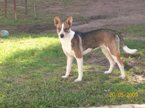
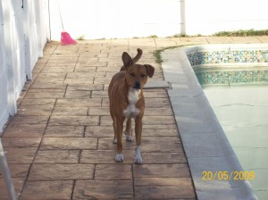
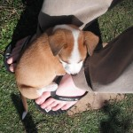
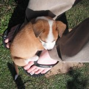

Photos,Site news
23 August 2010 | 1 Comment
I’ve been asked a few times the perfectly natural question “what is she?”
Dog. 100%.
She’s a crossbreed of two crossbreeds.
Here’s the ma and pa, respectively.

We are really hoping that Roxy’s ears get the awesome one-up-one-down of her dad. It’s happening a little already, so signs are good :).
ION: I’ve added some date bits to the sidebar, for reference.
House Training,On Your Own Time,Photos
16 August 2010 | 2 Comments
Most recent challenge: collar.
We haz a very cute red one (photo below) that Roxy, of course, hates.
She goes into this weird epileptic-type fit once she realises she’s got it on, then flumps down somewhere and looks all depressed. Poor puppy!
We have adapted the kennel.
She’s an inside dog, so kennelling outside seems silly.
The kennel currently lives, roofless, next to the bed, with her dog bed in it.
She loves it!
After the next week or two, we’re going to put the roof back on and move the kennel into a corner.
Slowly, slowly, catch-y soft monkey. Dog. Thing.
After that, it gets a door on the front. It’s all about crating.
It seemed a bit mental to me at first, but now I’m getting the idea. Safe, quiet, place and all that.
Finally managing to find some time to read the dog training book we bought.
It’s got some good training techniques, but lots of it is wrapped in odd hippy new-age stuff.
Hmm.
Also: photos!


 

Photos
12 August 2010 | Comments Off
Photos,Site news
11 August 2010 | 4 Comments
Hello, world!
Rather than clutter up the main blog with all my ravings about the awesomeness of being a puppy daddy (see OotS #51 for reference), I will place them here.
Our dog is called Roxy, and she is awesome. 

I have quite strong views about obedience and behaviour and all that jazz. I’m determined that Roxy will be well behaved and well adjusted.
For starters this means no sitting on the furniture and no sleeping on the bed – that’s human territory.
More later – quite tired, but have lots of work to do!


{kind=link}
{kind=link}